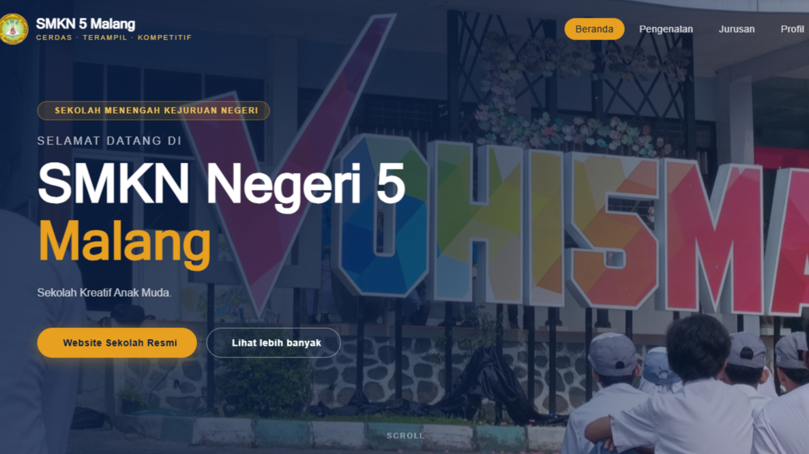
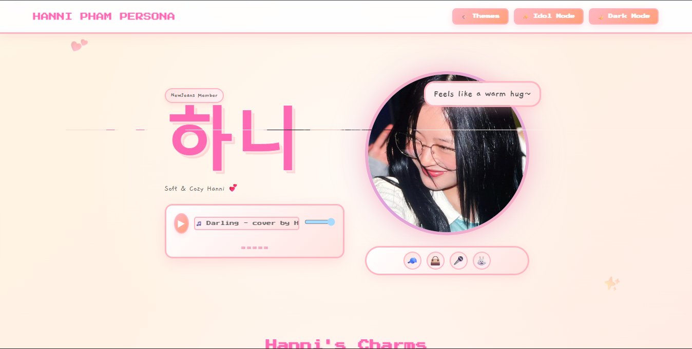
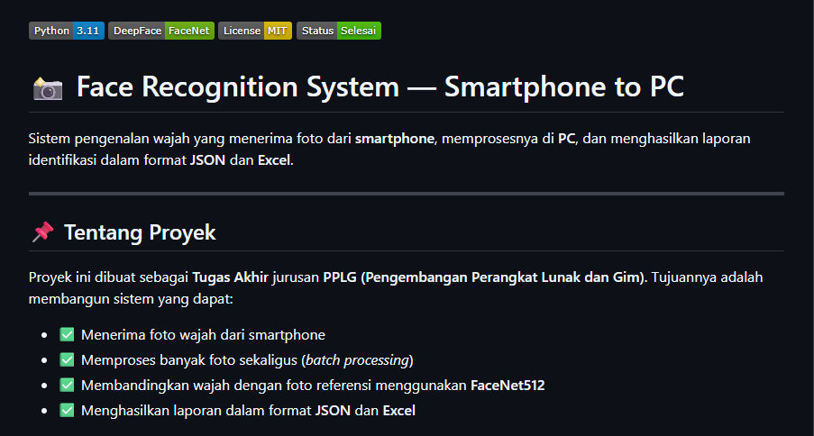
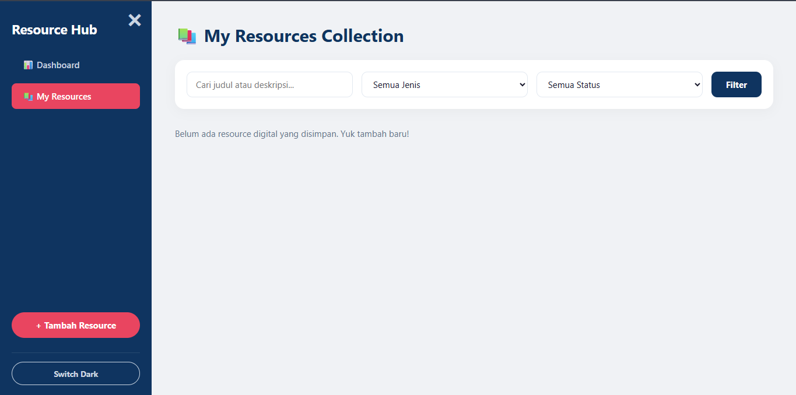
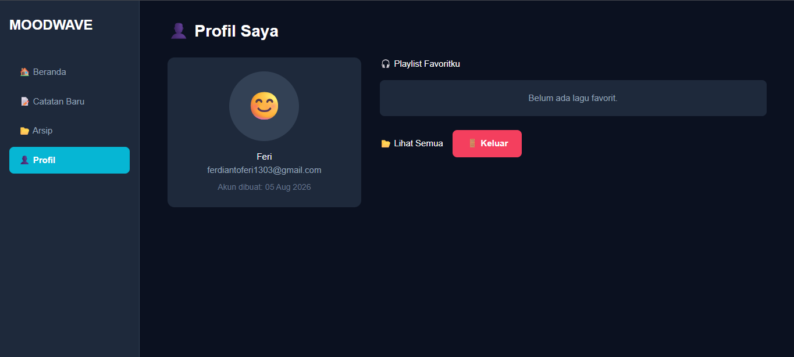
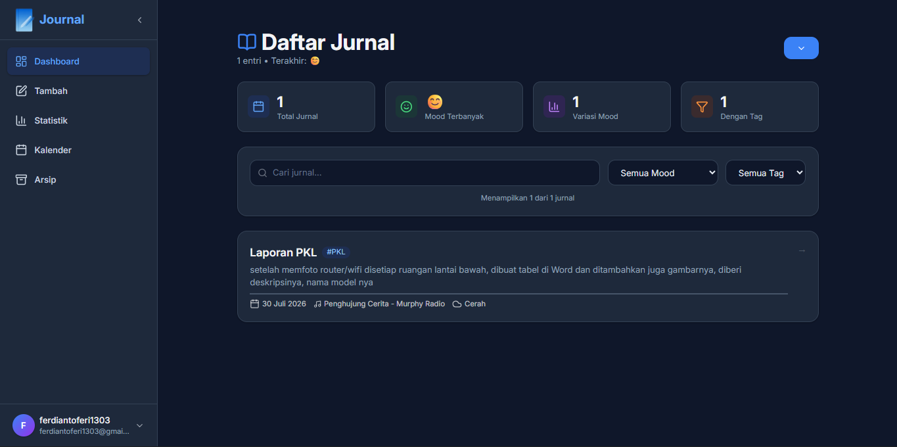
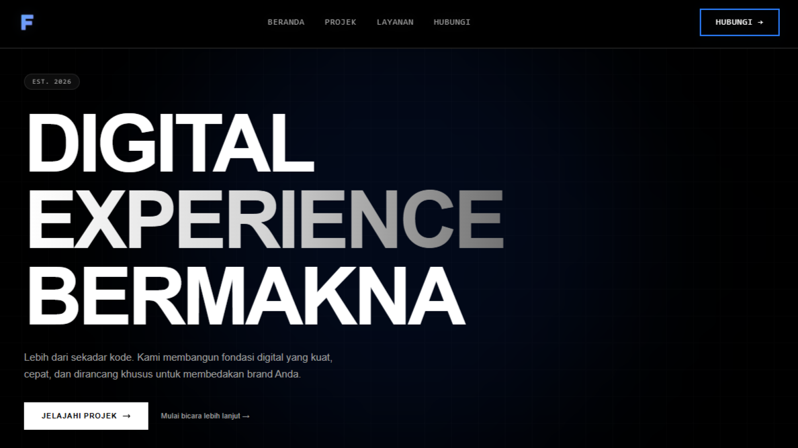

FULL TECH STACK
Teknologi yang saya gunakan sehari-hari dan yang sedang saya pelajari.
FRONTEND CORE
BACKEND & DATABASE
TOOLS & WORKFLOW
MODERN EXPLORATION
Proses sedang belajar dan eksplorasi teknologi modern
Teknologi yang saya gunakan sehari-hari dan yang sedang saya pelajari.
Proses sedang belajar dan eksplorasi teknologi modern
Semua projek ini adalah hasil dari proses belajar dan ada juga dari sebagian tugas sekolah.

Aplikasi mobile Catatan dengan fitur, Tambah catatan baru dan mengedit.

Website edukasi yang menampilkan berbagai macam batik tradisional Indonesia. Bagian tugas P5 dari sekolah.

Projek ini saya mencoba mengasah skill saya pada murni JavaScript, seperti Fitur, Logika dan Fungsi,

Landing page ini bagian dari tugas sekolah untuk melengkapi nilai waktu kelas dua.

Tujuan untuk membuat Fanpage ini adalah hanya untuk menunjukan rasa tertarik pada Member Idol tersebut, dengan menyamakan Sifat dan Kepribadinnya dia untuk menyesuaikan Fitur, Tema, dan Konsep lainnya.

Sistem pengenalan wajah yang menerima foto dari smartphone, memprosesnya di PC, dan menghasilkan laporan identifikasi dalam format JSON dan Excel.

Personal Resource Hub adalah aplikasi web manajemen koleksi sumber daya digital (link dari YouTube, Spotify, Instagram, artikel, dll) yang dibangun dengan PHP Native dan MySQL. Proyek ini adalah portofolio full-stack pertama yang saya.

Moodwave adalah aplikasi web jurnal harian berbasis suasana hati dan musik. Bagian dari projek LSP Teknologi Digital.

Projek ini bukan seperti Jurnal biasa tapi menggunakan Stack dan UI yang lebih modern, dengan ada nya fitur ganti bahasa serta upload foto jika ingin menambahkan jurnal baru atau saat ingin di edit.

Landing page ini adalah projek untuk memulai menjadi Freelance Web Developer, dengan menawarkan jasa pembuatan website, landing page, dan design UI/UX.